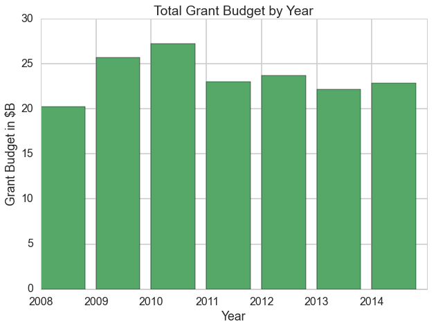
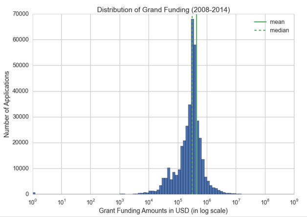
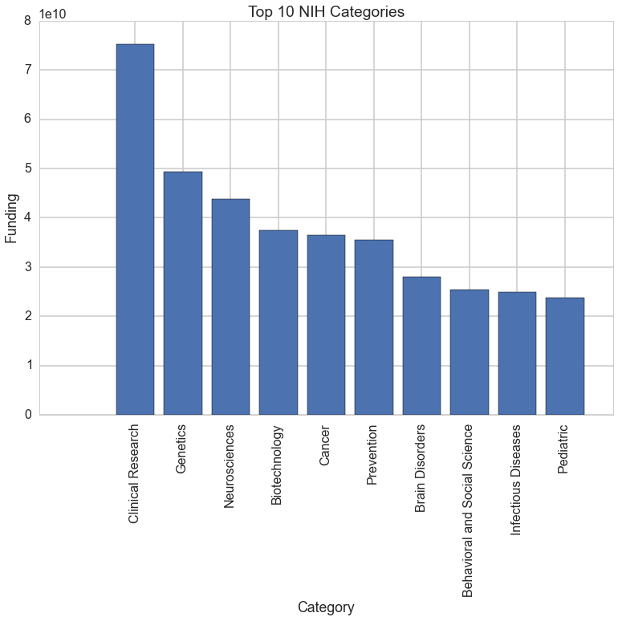
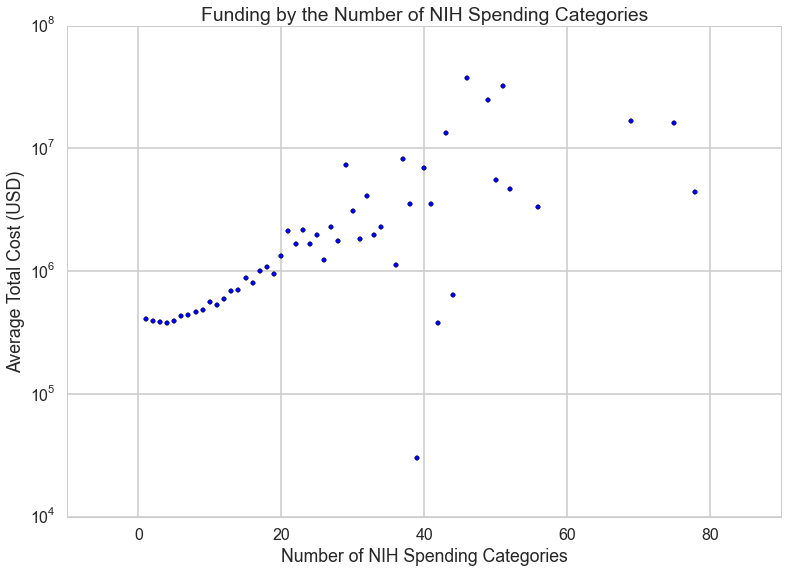
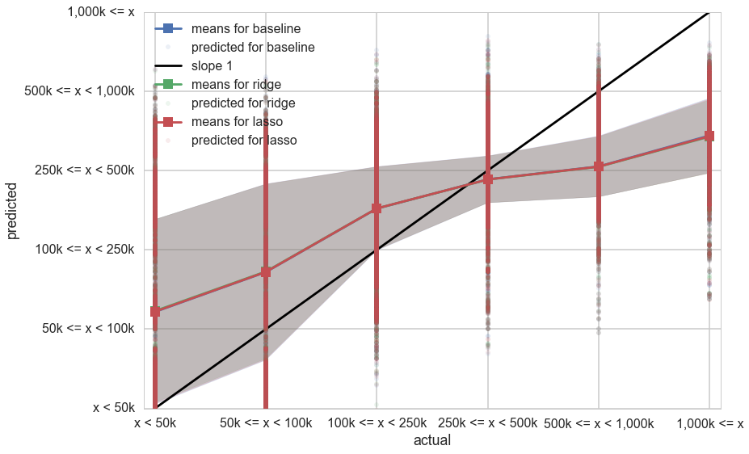
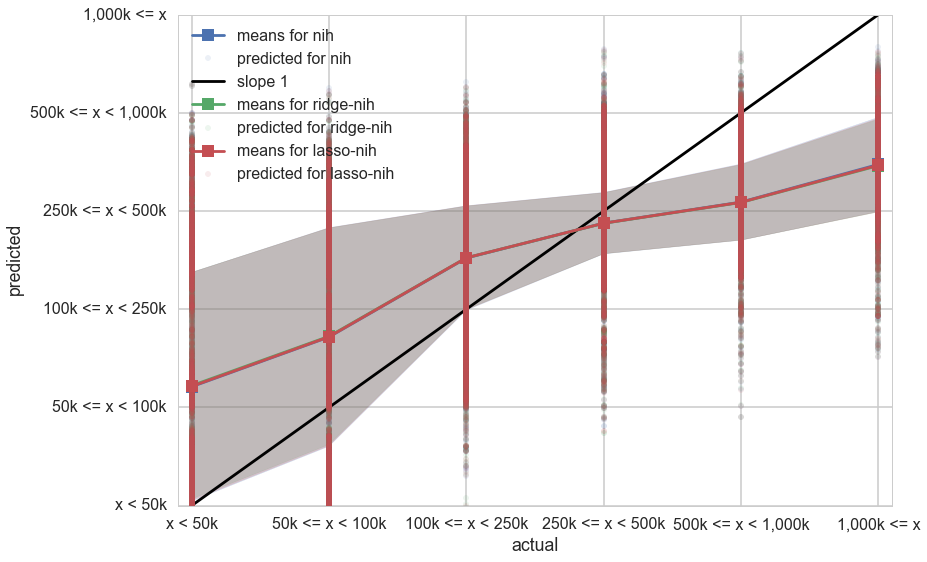
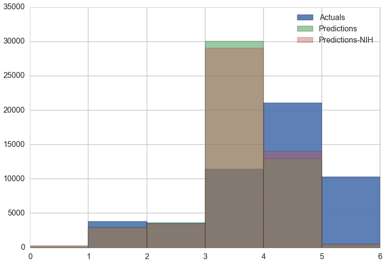

Project Overview
Motivation
The National Institutes of Health (NIH), the nation’s medical research agency has paved the way for important discoveries that have improved health and saved lives for centuries. Approximately 83% of NIH’s $30.3 billion FY 2015 budget goes to more than 300,000 research personnel at over 3,000 universities, medical schools, and other research institutions in every state and throughout the world to support research that turns discovery into health. One of the challenges faced by NIH is ensuring adequate funding for research associated with emerging health issues. As the specific work associated with emerging issues is inherently difficult to describe in detail at the time of application, applicants typically describe the process by which they plan to identify, prioritize and address newly arising concerns and respond to them. This element of uncertainty detracts from NIH’s research priorities. This problem calls for a more scientific approach to emerging health issues identification and research funding. We propose a new data science program that identifies emerging health issues and predicts grant funding for related research.
Objectives
Our primary objective is to answer the following questions:
- What research topics are receiving increased attention?
- What do grant funding patterns look like and how that translates to emerging health issues?
- Can we integrate these explanatory variables and funding patterns into a predictive algorithm that would predict level of funding for emerging health issues research?
Approach
We began our study by scraping relevant datasets from the NIH website. We then performed a series of exploratory analyses to understand how different variables were associated with one another. These explorations revealed important patterns about grant funding. We also incorporated mapping and clustering operations into our exploratory phase to identify top categories indicative of emerging health issues. The information collected during the exploratory phase led to the creation of predictive algorithms using multiple regression.
Exploratory Data Analysis
As a general introduction to the NIH grant system it is useful look at the overall budget by fiscal year since 2008. The NIH grant funding budget typically ranges in the order of 20 to 30 billion dollars for a given fiscal year.

Additionally, the funding amount transformed to a log scale follows a normal distribution. 
Visualizing the top research categories that were funded each year revealed very little change year over year for the top topics. This was indicative of the pattern of top topics to expect for next year. The top 10 NIH research grant categories were:

Last but not least, our exploratory analyses also revealed the linear relationship between the number of categories and funding. 
Prediction
Today there is no easy way for a grant applicant to determine the level of funding that will be granted to their research. With the knowledge we gained about the data through the Exploratory data analysis, we attempted to predict grant funding using regression techniques. We first divided grant funding into bins and created a baseline model using multiple linear regression to predict grant funding as a categorical response. We then ran ridge and lasso regression models and compared the results of each as displayed below.
RMSE for baseline 0.901081338038
RMSE for ridge 0.900670620126
RMSE for lasso 0.900767208748

As a next step, we included indicators for the top research categories and reran our regression models. The results of these regressions are displayed below. Upon comparison with the results of the regression models with the basic data set, it was apparent that adding the research categorical indicators yielded a slight improvement to our models.
RMSE for baseline-nih 0.895653362145
RMSE for ridge-nih 0.89531604146
RMSE for lasso-nih 0.895351127795

We used RMSE as the performance indicator to compare our models because it's good at measuring the difference between values predicted by a model and the values actually observed. The RMSE punishes large errors or in our case predicting a <=1000k funding bucket when it was actually < 50k.
Another way to compare how our predictions performed would be to bucket the groups of predictions vs actuals. While this could be misleading if our RMSE was high, it showcases the improvement of adding our indicator variables.

Conclusion & Next Steps
After exploring different combinations of variables and regression models, we observed that the ridge regression model on the data set including indicators for research categories yields the lowest RMSE. The ridge regression performed better than the baseline linear regression and the lasso regression models.
Given our understanding of the grant funding patterns and emerging research categories gained through our explatory data analysis as next steps we would look to improve our model by using additional data elements. It may be worthwhile to mine the abstract and publications also available at the NIH website for research categories and use them as explanatory variables in our models. This method, with enough improvement, can be used as the foundation to develop an online web application that could predict the level of grant funding based on research topic. This can benefit the grant applicants immensely as they prepare their grant proposals. Additionally this application can predict research trends using funding as one of its features.